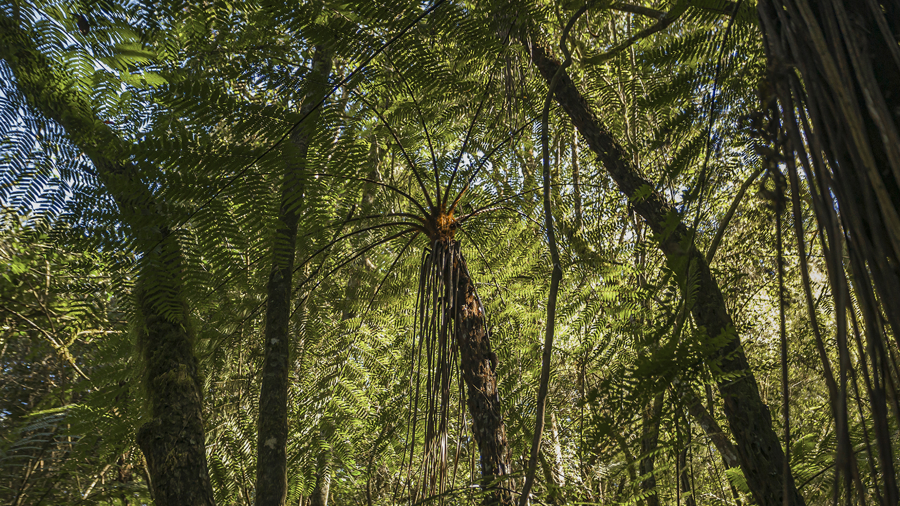
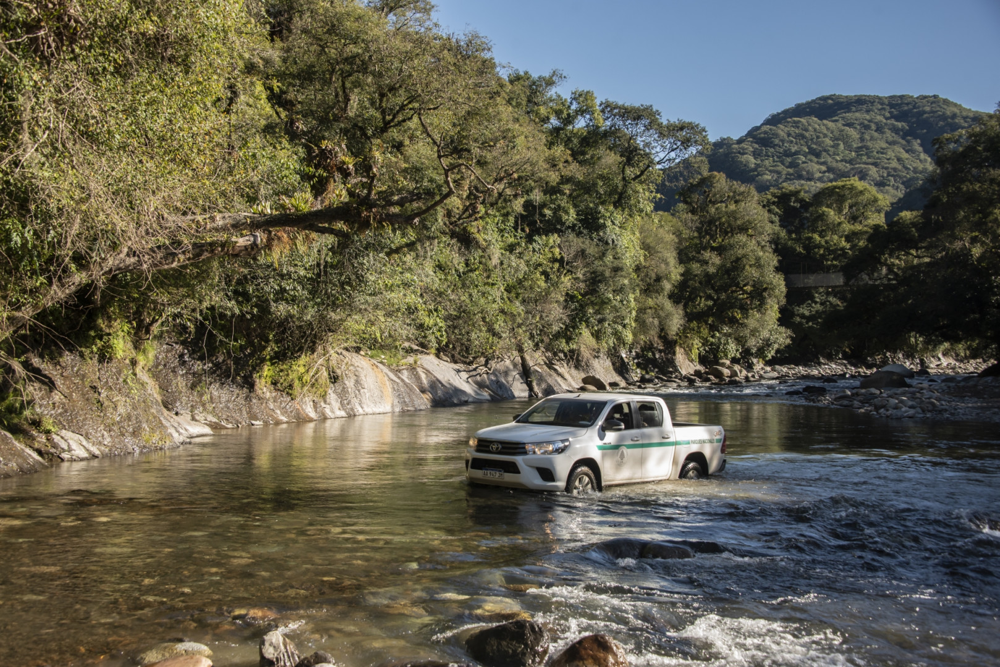
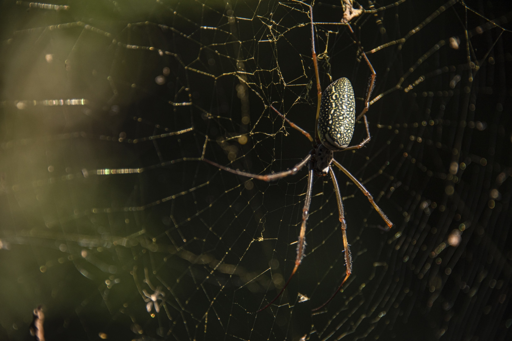
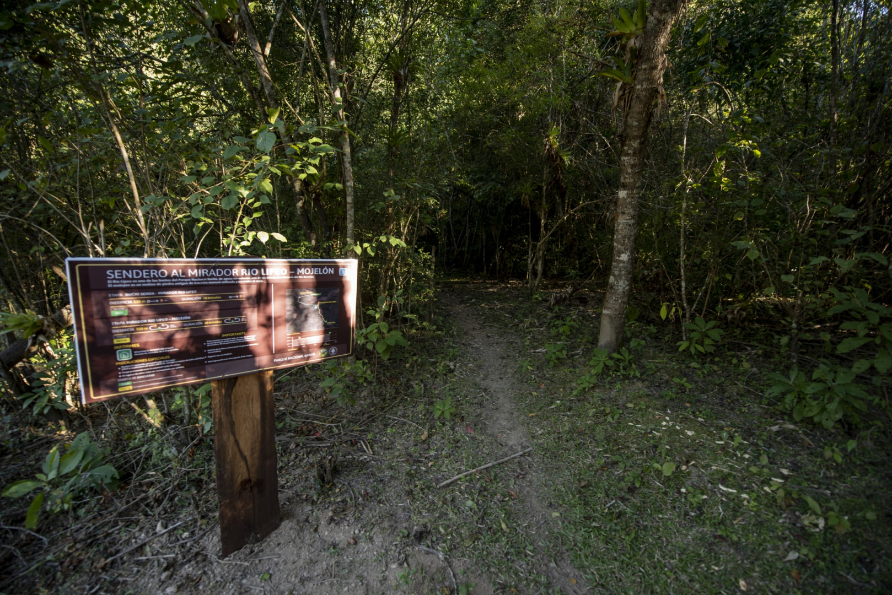
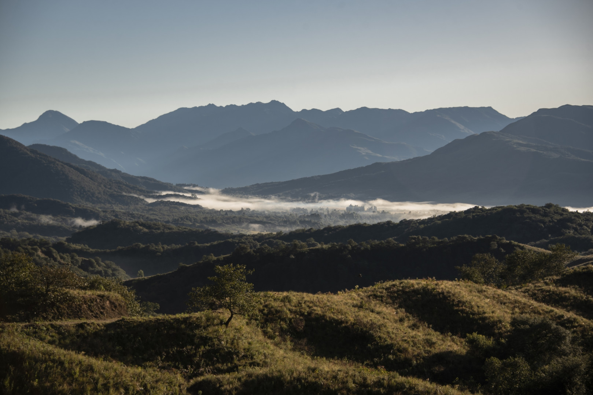
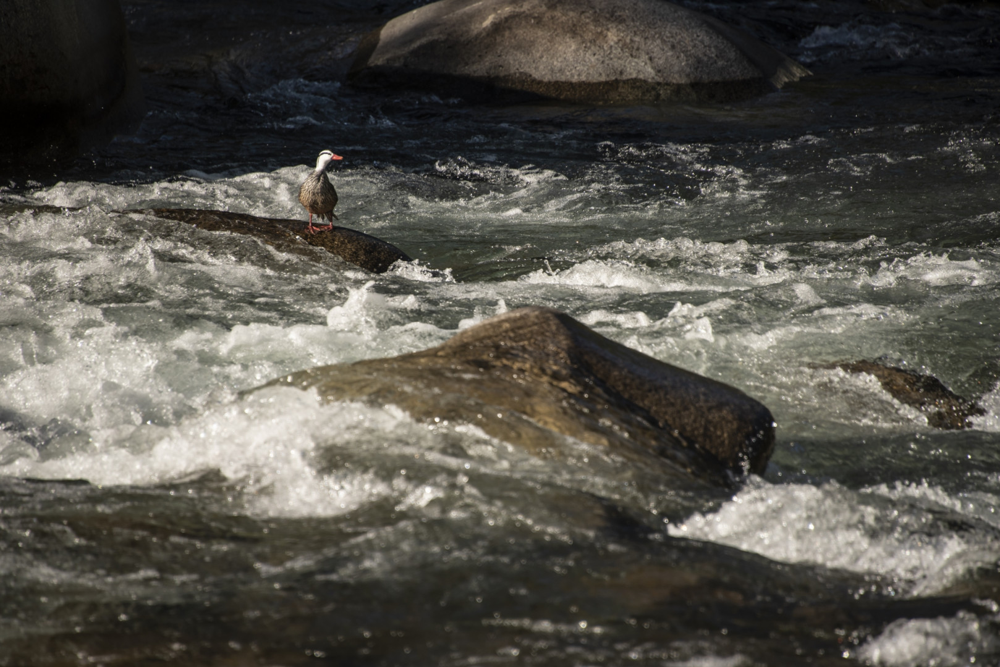

Es un paraíso natural situado cerca de la frontera salteña con Bolivia. Conserva la biodiversidad de las Yungas y lo convierte en un destino ideal para la observación de aves y la investigación científica.
Es uno de los parques con mayor biodiversidad, con selvas de montaña que se desarrollan a alturas entre los 1.800 y los 2.000 metros.
El parque también resguarda una profunda herencia cultural vinculada a las culturas originarias, desde el periodo preincaico hasta sucesos históricos como las guerras de la Independencia y del Chaco, la guerrilla de los años 60 y el desarrollo productivo del "Ramal" jujeño-salteño.
Flora
Es uno de los parques con mayor biodiversidad, con selvas de montaña que se desarrollan a alturas entre los 1.800 y los 2.000 metros.
Nivel inferior
Este nivel, por debajo de los 500 metros sobre el nivel del mar se denomina Selva Pedemontana, representada por árboles de tipa, pacará y cebil, acompañados por el jacarandá y el cochucho.
Nivel medio
Sobre los 500 metros sobre el nivel del mar, se encuentra la Selva Montana. Se observan plantas (epífitas) que crecen sobre otras, tapizando las ramas o colgando como cortinas; mientras que lianas y enredaderas trepan por los troncos buscando luz.
Nivel superior
A partir de los 800 metros sobre el nivel del mar comienza el Bosque Montano, cuya humedad es superior a los niveles anteriores no solo por las lluvias sino tambien por nubes que se recuestan sobre los faldeos. En esta zona destacan el nogal, el aliso y el pino del cerro.
Fauna
Entre los mamíferos mayores se cuentan el yaguareté o tigre, actualmente en serio peligro de extinción, el puma, la corzuela, dos especies de chancho de monte, el oso hormiguero, el tapir o anta, el carpincho y el zorro. Es posible avistar ardillas y monos caí en el recorrido a través de los senderos del Parque Nacional.
Los ríos que surcan el parque, como el Lipeo, Pescado y Bermejo son el hábitat de distintas especies de peces autóctonos como sábalos, bogas, bagres y dorados. Arroyos más pequeños dan albergue a peces más pequeños como dientudos, yuscas y viejas del agua. Todos ellos sirven de alimento a mamíferos como el lobito de río y el osito lavador o mayuato.
Aves de variadas formas y colores habitan los diferentes pisos de vegetación de la selva, destacándose desde las majestuosas águilas crestadas hasta el minúsculo picaflor enano.





